Raster data
The raster model is a widely adopted approach for storing and representing information on continuous objects, coded using a set of grid cells, each with its relative value that represents the conditions of the given area covered by the pixel. Values are cells of a grid with certain extensions and a certain resolution.
Such data format is particularly useful to represent features whose characteristics are not homogeneous on a given area.
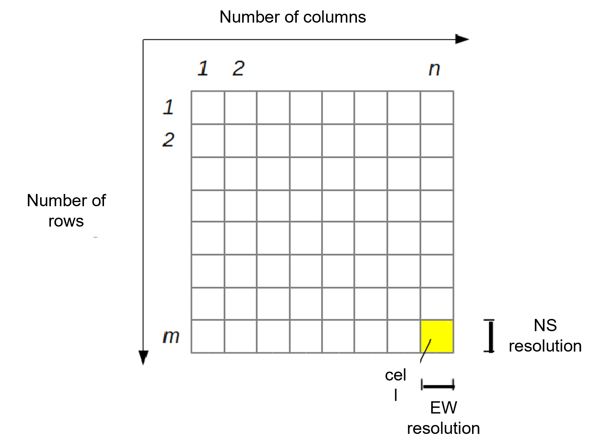
Some examples of data that are commonly available and distributed as raster are:
- Aerial photos, including satellite imagery and orthophotos.
- Digital Terrain Models (DTM) which can be mainly subdivided into:
- Digital Elevation Models (DEM) which is a digital file with ground surface elevation values at regularly spaced inntervals in the horizontal plane;
- Digital Surface Models (DSM) that represents in digital form the heights of the upper part of the terrain including building, infrastructures and trees without the filtering procedures used to produce DEMs.
- Thematic maps representing the variation of geomorphologic characteristics (e.g. geological maps) or coverage (e.g. land cover maps) of a given territory.
In a GIS, each raster layer possesses pixels (cells) of a consistent size, which defines its spatial resolution. This characteristic becomes evident when you observe an image at a reduced scale and subsequently magnify it to a larger scale.
Images characterized by a pixel size that encompasses a limited area are referred to as high-resolution images, as they allow for discerning a substantial level of detail within the image. Conversely, images featuring a pixel size that encompasses a larger area are termed low-resolution images, as they exhibit a reduced level of detail.
In the following guided tutorial you will learn how to load raster data in the QGIS environment, manipulate and style layers and execute common operations such as clip and raster calculations. The data used for this exercise can be downloaded here and consists of the Belvedere glacier orthophotos and digital elevation models produced during the 2021 and 2022 monitoring campaigns.
Loading data
In the data folder you just downloaded, you can find 7 different files referring to 3 distinct raster data layers.
In particular:
-
All files named [2022_ortofoto_20cm] refers to the orthophoto of the glacier area of interest in a tiff format, as surveyed with UAVs inn 2022. The meaning and role of the different file extensions will be explained in the next steps.
-
[2021_dem_20cm] is the digital elevation model produced at the end of the 2021 survey campaign.
-
[2022_dem_20cm] is the digital elevation model produced at the end of the 2022 survey campaign.
For adding a new raster data layer to a QGIS project, click from the menu bar:
Layer > Data source manager
TIF import
Similarly to the import procedure for vector data, select the Raster tab and in the Source section, by clicking the Browser (...) icon, look for the 2022_ortofoto_20cm.tiff file on your laptop. After selecting it, click Add. Hence, close the Data source manager window and check that the orthophoto of the Belvedere glacier area is correctly visible on the map canvas view.
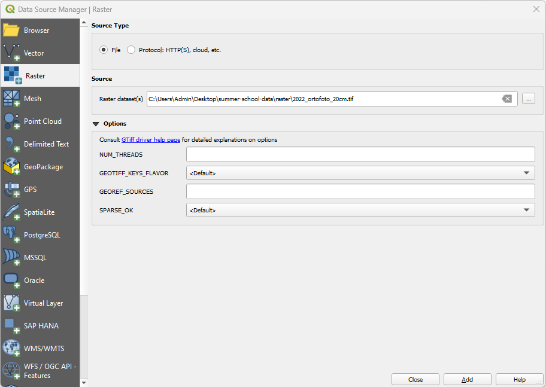
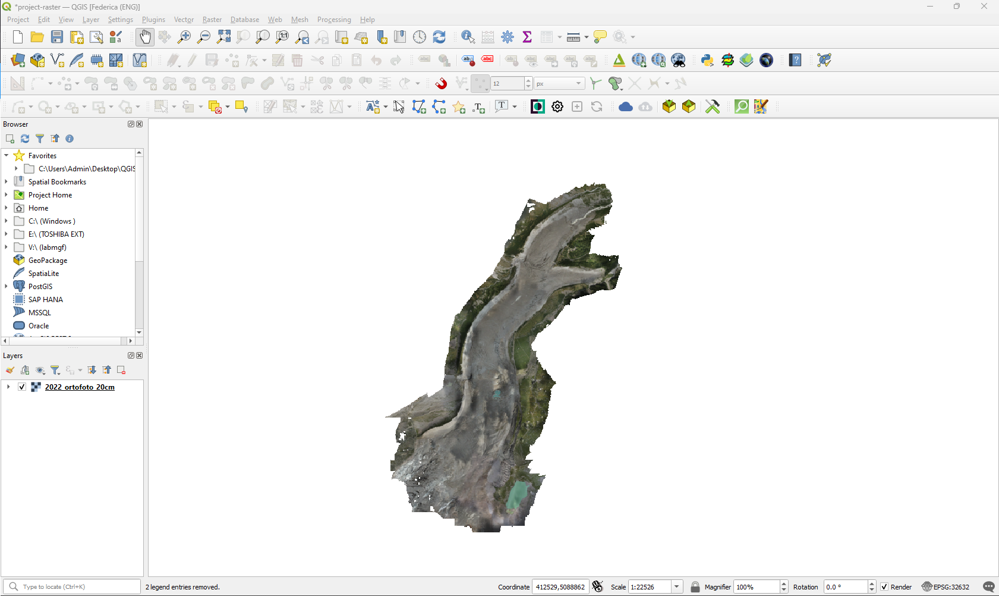
The loaded vector layer will also appear in the QGIS layer section with its name close to a checkboard icon, symbolizing that such data is a raster.
The chosen file is a Tag Image File (TIF), a widely adopted format for raster data in GIS environments. Usually, the main file with .tif extension is accompained by another file with the same name and the .tfw extension. Such file saved in plain text format contains information on the georeferencing of the reaster itself. Indeed, they store information on the X and Y pixel size, rotation as well as the global coordinates for the top-left corner of the raster.
Drag & drop import
Exactly like the case of shapefile import, raster files can be imported in QGIS project with the drag&drop shortcut. Try to execute this operation with the DEM rasters: 2021_dem_20cm.tif and 2022_dem_20cm.tif.
The expected map canvas view for each DEM is the one depicted below in grayscale.
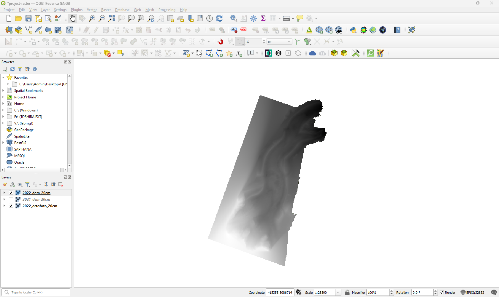
Layer properties
General information on each layer loaded in a QGIS project can be accessed through the Properties panel. As suggested for vector files, it is recommended to check this information everytime a new layer is added to the page: it helps understanding the source and nature of data as well as if any interpretation issue has affected the layer loading.
To view the properties of the raster, right-click on the layer and select Properties.... The newly appeared window contains different tabs. In the next sections some of the most useful for routine procedures will be explained in details foor the case of raster.
Information
This read-only tab summarizes the main information and metadata of the chosen layer. In the case of raster layer it is important to mention, in addition to info field in common with vector data, the information about number of band, band statistics, grid dimensions and pixel size giving important information on the spatial resolution of the raster itself. For example, in the case of all the rasters used in this guided exercise the spatial resolution will be equal to 20 cm, meaning that each pixel of the raster file covers a squared area of 20 x 20 centimeters.
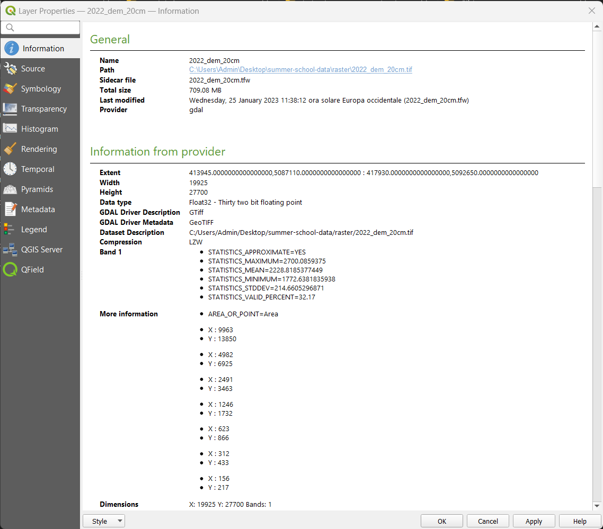
Symbology
The layer visual representation in the map canvas can be modified as preferred in the Symbology tab. Different type of representation can be chosen from the dropdown menu on top of the window and differs from the vector data ones.
Singleband gray
The singleband gray is the default view of raster data when they are loaded on QGIS. It consists in representing them with just one color gradient that goes from black, for lower values, to white, for higher ones.
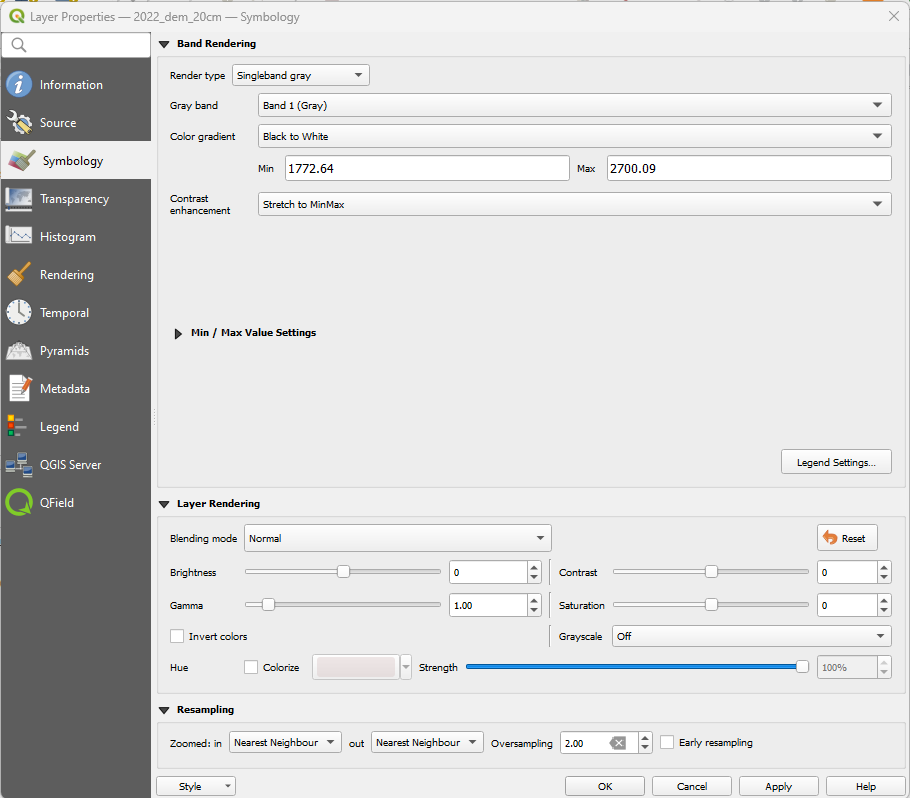
Singleband pseudocolor
The singleband-pseudocolor render type, as the singleband-gray, is suitable for showing quantitative information. It allows to choose a color ramp and also (choosing for Mode: Equal Interval or Quantile) a number of classes there to categorize the different intervals of values to be represented. Choosing for Mode:Continuous the number of classes cannot be manually set.
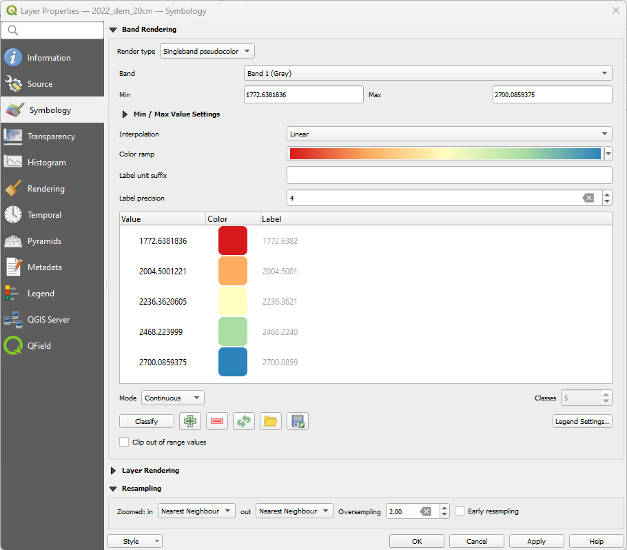
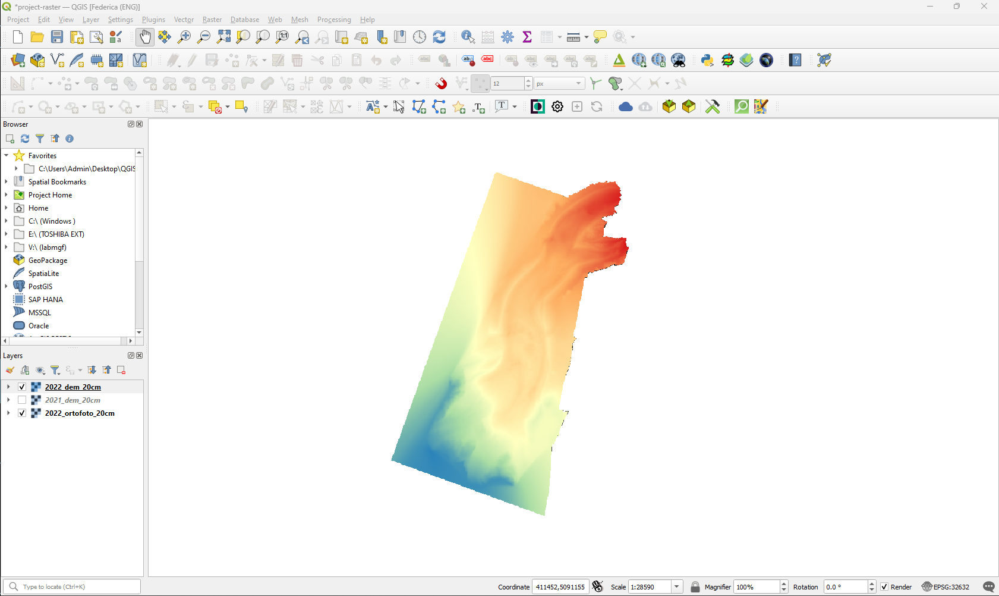
Raster projection
Checking the information table in the raster layers properties it is possible to notice that they're inserted in a reference system that is different from the one adopted for the QGIS project. Hence, it is necessary to execute a reprojection of the layers in the desired reference system (EPSG: 32632 - WGS84 UTM Zone 32 N).
In order to do so, access the menu Raster > Projections > Warp (Reproject)....
In the newly appeared window, it is required to select the layer to be reprojected, insert information on the source reference system (if available) and on the target one. By default, the adopted resampling method for the raster is the Nearest Neighbour, but it is possible to select many other options from a given list. Once all the required parameters are defined, click Run to perform the transformation.
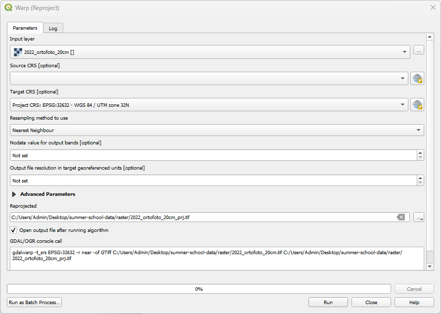
Let's repeat the operation with all the raster in order to have all of them inserted in the desired reference system.
Clip raster
Before proceeding with useful analysis on the raster data of the glacier, it is necessary to clip the rasters using the Belvedere perimeter polygon. In particular, the vector file used in the previous exercise will be adopted as a mask to cut the digital elevation models. This commonly used procedure is particularly useful to define common areas of study, avoiding the influence of external data that are available only in one of the DEM.
To perform this, first load again the bbghiacciaio vector layer and then access the menu Raster > Extraction > Clip raster by mask layer.
In the plugin window, select the layer you'd like to clip and the vector layer to use as mask for the operation. Then, define the input and output reference systems. Once everything is set, click Run. Repeat the procedure with all the given DEMs.
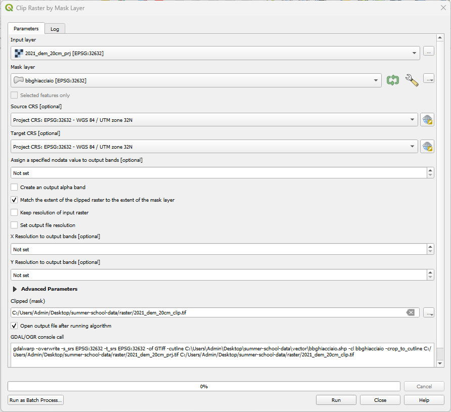
The expected output in the map canvas looks similar to the one depicted in the illustration below.
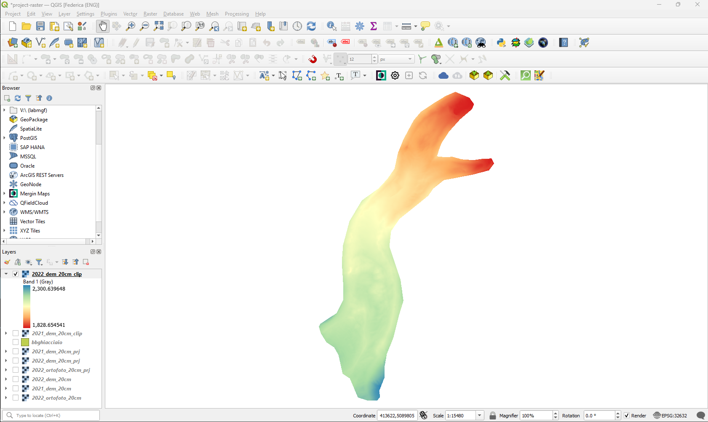
Raster calculation
Finally, it is time to perform some simple calculation on the volume differences based on the glacier's DEMs computed during the 2022 and 2021 campaigns.
QGIS makes available a powerful tool for simple calculation on raster data, the so called Raster Calculator. It is accessible at the menu Raster > Raster calculator.
Once its window is visible, it is possible to see listed all the raster bands of the layers loaded in the QGIS project. On the right of the window, it is possible to define the desired options for the output calculated raster: file name, path, format, extension, resolution and reference system. Finally, in the lower section a series of common math operators is present alongside the Expression box where it is possible to formulate the expression for the calculation by inserting the operators as well as the needed raster bands to be used as variables (by simply double clicking on them on the Raster Bands list).
To compute the height differences between 2022 and 2021, first double-click the 2022 clipped DEM and then, after inserting the subtraction symbol, double-click the 2021 clipped DEM. Then, click on the OK button.
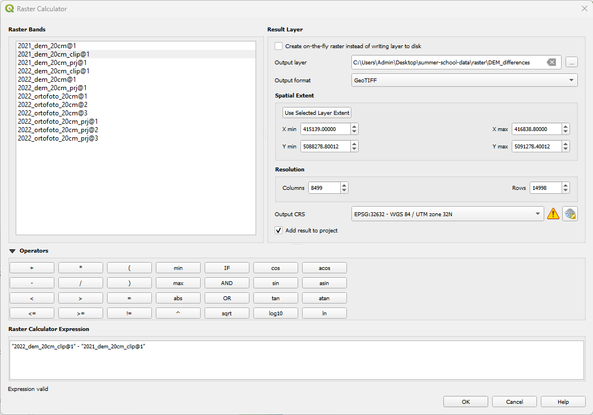
At the end of the processing, the output results in the map canvas should look similar to the one depicted in the image below.
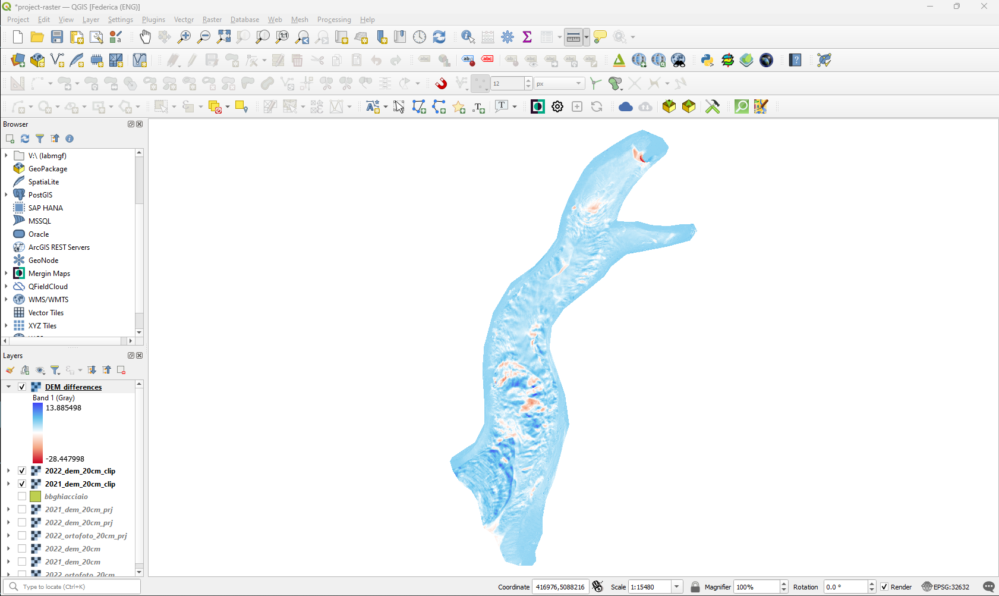
Now it is necessary to calculate the total of the differences, meaning the sum of the values stored in all the raster cells of the output file. This operation can be easily executed through a native plugin of QGIS called Raster layer statistics that can be accessed through the menu Processing > Toolbox > Raster Analysis > Raster Layer Statistics.
Select as the input layer the raster of interest, define a name for the output html report file and then click Run.
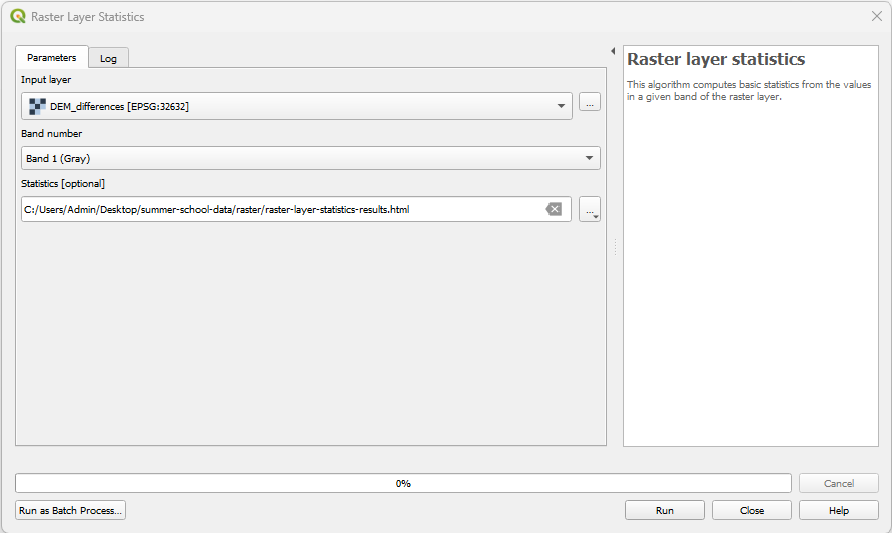
At the end of the procedure, open the HTML report that will contain an overview of the descriptive statistics related to the given raster.
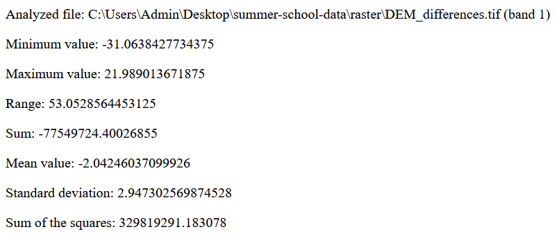
Once you identified the sum value for the raster, simply multiply it for the squared raster pixel resolution (pixel area) in order to obtain the total volume loss of the glacier between the 2 campaign.